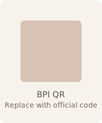

Account Name: Patricia Anne Santos
Account Number: 1234-5678-90
SWIFT Code: BOPIPHMM
Account Number: 1234-5678-90
SWIFT Code: BOPIPHMM

Tap on a question below to reveal the answer — we kept everything cozy and curated for you.
📍 Google Maps
🗺️ Waze Directions
(Replace the sample account numbers and QR images below with your official details.)
Please keep phones tucked away during the ceremony so we can all be fully present. Snap, share, and tag us freely at the reception!